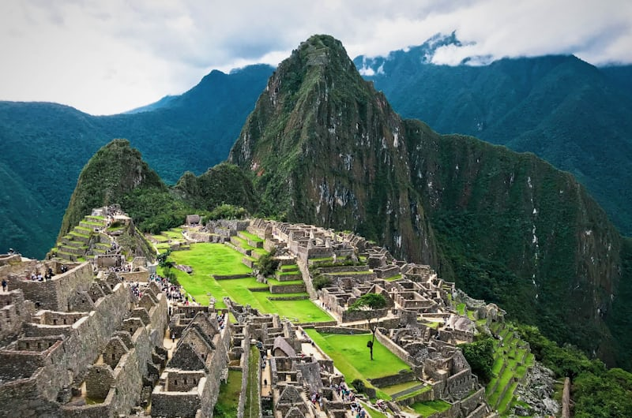
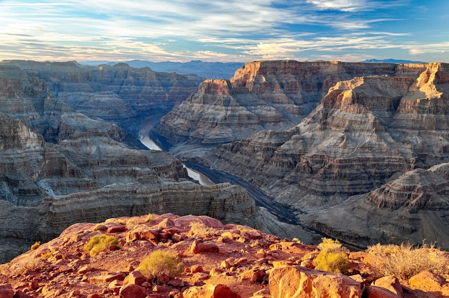
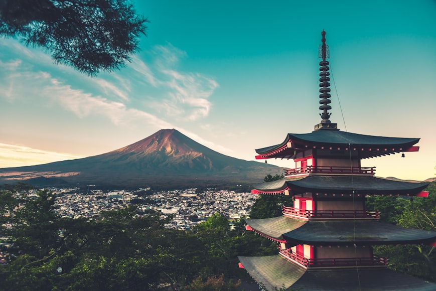

- Earth, as we know it, Is where all creatures, big and small gets to experience how to live, enjoy, have fun, grow, and eventually meet their end.
This planet of ours, is the home to millions upon billions of creatures, that belong to vastly different species' and families that had ancestors and relatives counting back from millions of years on our planets’ past.
- There are a lot of landscapes considered as habitats, that hold hundreads of lives of creatures from the smallest ones, up to the largest ones. Posing as a shelter and and a safe place where preys and carnivors live and participate in food chains.
Machu Picchu, peru
Image:Eddie KiszkaGrand canyon, USA
Image:Omer Nezih Gerek Mount Fuji, Japan
Image:Max Bender Those beautiful images above, show's a few magnificent and breath taking views of places our world has to offer. But our lovely planet is currently plagued by a few crisis that if we don't solve in time, it might endanger or maybe even end the future generations that are yet to come.
*Climate change*
refers to long-term shifts in temperatures and weather patterns, primarily caused by human activities such as burning fossil fuels, deforestation, and industrial processes. These activities increase greenhouse gas emissions, trapping heat in the Earth's atmosphere and leading to global warming, extreme weather events, rising sea levels, and disruptions to ecosystems. While climate change can occur naturally, the rapid changes observed today are largely driven by human actions.
*Biodiversity loss*
is the decline or disappearance of different species, ecosystems, and genetic diversity on Earth. It occurs due to human activities like deforestation, pollution, habitat destruction, climate change, overexploitation of resources, and the introduction of invasive species. Biodiversity loss weakens ecosystems, making them less resilient to environmental changes and reducing their ability to provide essential services such as clean air, water, and food. This loss threatens global food security, disrupts natural processes, and increases risks to human health and economies.
*Pollution*
is the introduction of harmful substances or contaminants into the environment, affecting air, water, and land. It can result from human activities like industrial waste, vehicle emissions, plastic disposal, and chemical spills, causing damage to ecosystems, wildlife, and human health.